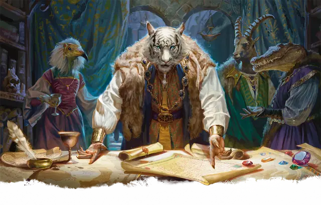

Ракшас
Rakshasa
Среднее Исчадие, Принципиальное Злое

Класс Защиты 17 Инициатива +8 (18)
Хиты 221 (26к8 + 104)
Скорость 40 футов
| мод | спас | ||
|---|---|---|---|
| СИЛ | 14 | +2 | +2 |
| ЛОВ | 17 | +3 | +3 |
| ТЕЛ | 18 | +4 | +4 |
| мод | спас | ||
|---|---|---|---|
| ИНТ | 13 | +1 | +1 |
| МДР | 16 | +3 | +3 |
| ХАР | 20 | +5 | +5 |
Уязвимость к урону Колющий от оружия существ под воздействием заклинания Благословение
Иммунитеты Испуганный, Очарованный
Чувства пассивное Восприятие 18, Истинное зрение 60 футов
Языки Общий, Инфернальный
Опасность 13 (10 000 опыта; БВ +5)
Особенности
Высшее сопротивление магии. Ракшас автоматически преуспевает в спасбросках от заклинаний и прочих магических эффектов, а броски магических атак автоматически промахиваются по нему. Без разрешения ракшаса ни одним заклинанием невозможно наблюдать за ним издалека, прочесть его мысли или определить его тип существа или мировоззрение.
Восстановление исчадия. Когда ракшас умирает за пределами Девяти Преисподних, его тело превращается в ихор и в тот же миг заново возрождается со всеми Хитами где-то в Девяти Преисподних.
Действия
Мультиатака. Ракшас совершает три атаки Проклятым касанием.
Проклятое касание. Бросок рукопашной атаки: +10, досягаемость 5 фт. Попадание: 12 (2к6 + 5) Рубящего урона плюс 19 (3к12) Некротического урона. Если цель — существо, она проклята. Проклятая цель не получает преимуществ окончания Короткого или Долгого отдыха.
Пагубный приказ (Перезарядка 5–6). Спасбросок Мудрости: Сл 18, каждый враг в 30-футовой Эманации, исходящей от ракшаса. Провал: 28 (8к6) Психического урона, и цель Испугана и Недееспособна до начала следующего хода ракшаса.
Сотворение заклинаний. Ракшас сотворяет одно из следующих заклинаний, не нуждаясь в Материальных компонентах (заклинательная характеристика — Харизма, Сл спасброска заклинаний 18):
Неограниченно: Волшебная рука, Малая иллюзия, Маскировка, Обнаружение магии, Обнаружение мыслей
1/день каждое: Невидимость, Образ, Планарный переход, Полёт
Бонус мастерства +5
Среда обитания Город, Девять преисподних
Сокровища Реликварные
Ракшас
Обманщик, алчущий власти и плоти
Искусные манипуляторы, ракшасы внедряются в сообщества, чтобы завладеть положением и властью. Скрывая свою истинную природу, они похищают жертв и утоляют ненасытную жажду плоти.
Ракшасы способны выдерживать магию до определённого предела, но легенды рассказывают о благословенных воинах, что поражали их арбалетными болтами, стрелами и тому подобным оружием.
Облик ракшасов сочетает человекоподобное тело с чертами зверей и чудовищ. У каждого ракшаса есть некая физическая странность, сохраняющаяся даже под магической личиной, — например, повёрнутые задом наперёд кисти.